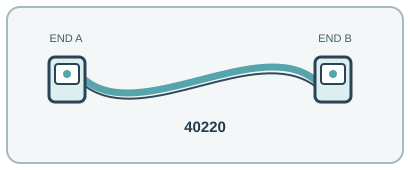

[ INDIVIDUAL COMPONENT // OPTICAL FIBER PATCH CORD ]
FS.com 40220 2 m OM4 LC/UPC Duplex Fiber Patch Cable
A 2 m OM4 LC duplex assembly for high-bandwidth multimode patching in switches, servers and panels.

IDENTIFICATION: Exact manufacturer model/SKU: FS.com 40220. Connector fit alone does not establish electrical, optical, protocol or platform compatibility.
Product specifications
| Manufacturer model / SKU | FS.com 40220 |
|---|---|
| Product type | OPTICAL FIBER PATCH CORD |
| Connector/end types | LC/UPC duplex → LC/UPC duplex; two fibers, A-to-B polarity. |
| Fiber grade / Ethernet category | OM4 50/125 µm bend-insensitive multimode. |
| Length | 2 m (nominal). |
| Bend radius and shielding | 2.0 mm aqua OFNR/riser-rated zipcord, dielectric/no EMI shield. Manufacturer gives fiber minimum bend radius 7.5 mm and assembled cable radius 20× OD dynamic / 10× OD static (40 mm / 20 mm at 2 mm OD). |
| Speed / distance limits | Duplex OM4 supports 10GBASE-SR up to 400 m at 850 nm on a compliant link. Higher-speed parallel SR4 applications use MPO/MTP multi-fiber interfaces rather than this duplex LC cord. 400 m is an OM4 10GBASE-SR link limit, subject to the transceiver, attenuation and the complete channel. |
| Compatibility | Duplex LC/UPC OM4 multimode ports and patch panels, 850 nm SR optics, correct Tx/Rx polarity. Do not mate UPC to APC or OS2 single-mode ports. |
Compatibility and handling
Duplex LC/UPC OM4 multimode ports and patch panels, 850 nm SR optics, correct Tx/Rx polarity. Do not mate UPC to APC or OS2 single-mode ports.
Bend-radius note: 7.5 mm minimum fiber bend radius; cable assembly minimum is 40 mm dynamic and 20 mm static (20D/10D at 2 mm OD).
Shielding / jacket: All-dielectric fiber assembly with OFNR jacket; no metallic EMI shield.
Inspect the jacket, strain relief, latch and end faces before use. For optical assemblies, keep dust caps in place and never look into a live fiber. For copper/active-end assemblies, avoid tight bends and cable crushing; validate PoE and device compatibility from the relevant port documentation.
Manufacturer sources and technical references
- FS.com — 40220 LC-LC OM4 patch cableExact product code, OM4 grade, connector ends, 2 m length and bend figures.
- FS.com — Multimode fiber types and reachManufacturer technical guide to OM3/OM4 Ethernet reach.
- FS.com — OM4 2 m regional product listingManufacturer regional listing cross-check for exact product family and length.
Manufacturer sources are HTTPS. Limits quoted here are link/application limits: the installed cable channel, transceivers, connectors, port support and installation quality determine actual service. Confirm model revision and regional documentation before deployment.